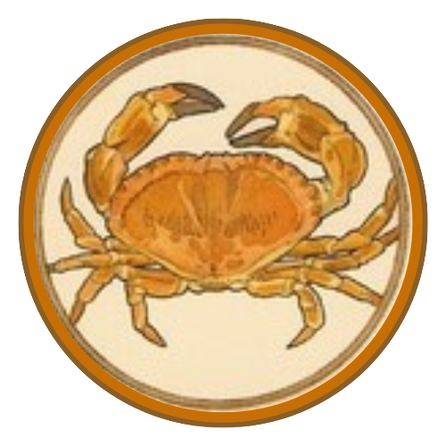

Personalidade de Câncer
Cancerianos podem ser os mais emotivos do zodíaco. São pessoas mais tímidas e discretas que não se põem muito em evidencia. Regidos pela Lua, por tanto estão intimamente ligados a ela e suas fases, oscilam da gentileza, amorosidade e carinho para irritação, falta de paciência e vitimismo.
Costumam ser pessoas extremamente sensíveis e por isso muito intuitivas, por conta disso sentem a necessidade de ajudar e proteger todos que amam. Estão sempre dispostos a oferecer ajuda e ouvir as lamentações dos outros.
Câncer é um signo que se apaixona facilmente, mas busca uma relação séria e estável. Quer se sentir seguro com aquele namoro ou casamento. Quando não se sentem seguros o suficiente, mostram seu lado de possessividade e ciúmes.
Se dão bem como terapeutas, cuidadores e professores, pois são super atenciosos e pacientes. A forte ligação com a casa sugere também profissões como arquitetura e design de interiores. O canceriano pode se destacar também em profissões relacionadas a comida, como chef de cozinha.
Câncer

O primeiro signo de Água, Câncer, é relacionado à sensibilidade, à emoção e ao arquétipo materno da proteção e do desejo de resguardar os entes queridos contra o mal. É um signo muito ligado à família e que aprecia conforto e segurança. A palavra “câncer” vem do latim e quer dizer “caranguejo”.
Câncer representa o caranguejo gigante que Hera, rainha dos deuses gregos, enviou para resgatar a um monstro reptiliano com várias cabeças. O caranguejo mordeu os pés de Hércules quando este combatia o terrível monstro, mas o mesmo foi esmagado. Para premiar o caranguejo por ter se arriscado, Hera transformou-o naquela constelação.